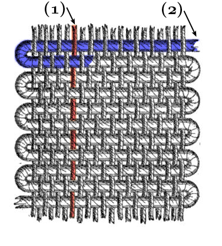

Textile materials¶
They are materials that group from the fabrics used in clothing or furniture, to a leather ball or the sail of a boat. Although their origin is very diverse, they all have in common their great flexibility and the sewing or gluing processes used in the manufacture of finished products.
Index of contents:
Threads¶
They are long strands made from the braiding of short fibers of animal, vegetable or plastic origin.
- Silk
- Fiber of animal origin (silkworms). It is one of the strongest natural fibers.
- Wool
- Fiber of animal origin (sheep hair).
- Cotton
- Plant-based fiber.
- Linen
- Plant-based fiber.
- Polyester, nylon and other plastics
- Fiber of artificial origin.
Textiles¶
They are sheets formed by threads joined in various ways or formed by animal skin.
- Felt
It is formed by fibers joined by steam and pressure, without weaving, so it is not very resistant.
It is used to make hats, skirts, jackets, rugs, etc. Sometimes it needs a lining to add more mechanical resistance.
- Flat weaves or fabrics
They are made up of several threads that intersect perpendicularly. They are made on looms that intertwine the weft (2) with the warp (1).
The fabrics are used to make all kinds of clothing, sails, furniture coverings, etc.
- Knitting
It is made by making many knots in a single thread (knitting) to form a fabric. The result is more elastic than cloth or felt.
It is used in socks or jerseys.
- Leathers
They come from the tanned skin of animals. The most used are cow, pig and sheep leather.
They are used to make shoes, gloves, belts, jackets, armchairs, containers for liquids, etc.
In ancient times it was used to make parchment books that have stood the test of centuries to this day.
{kind=link}